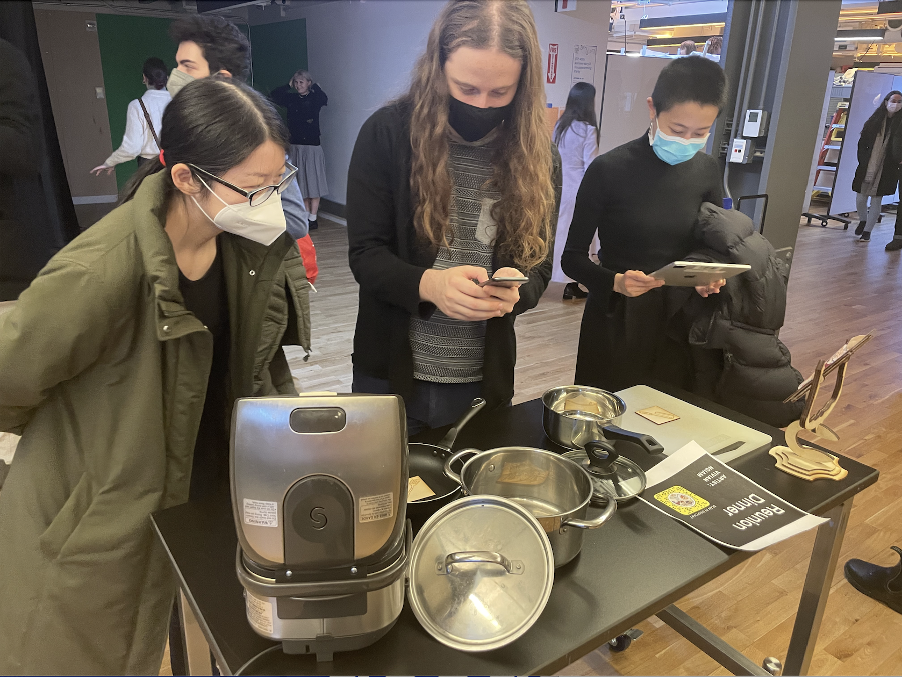
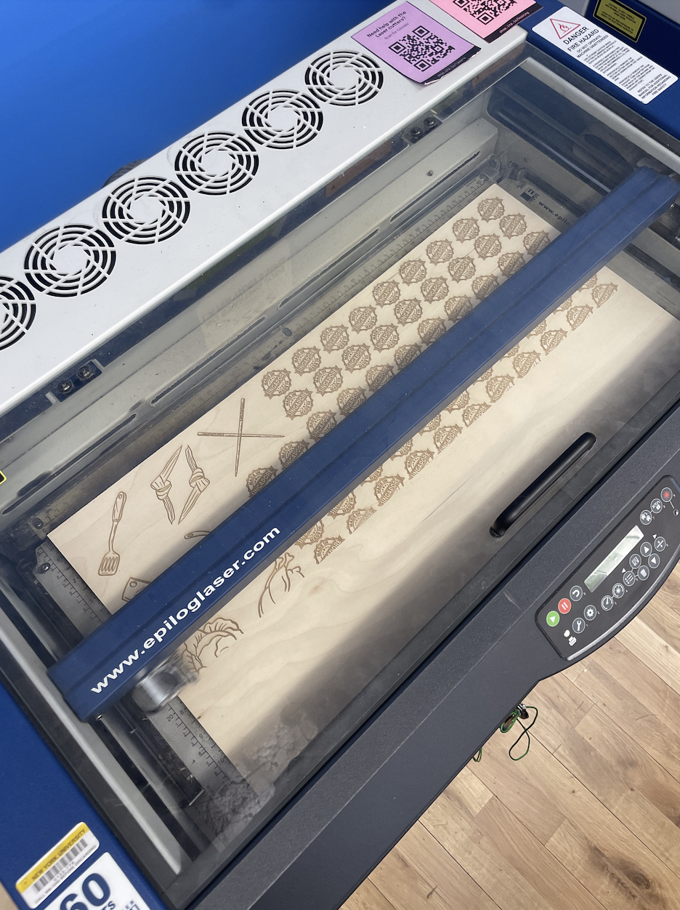
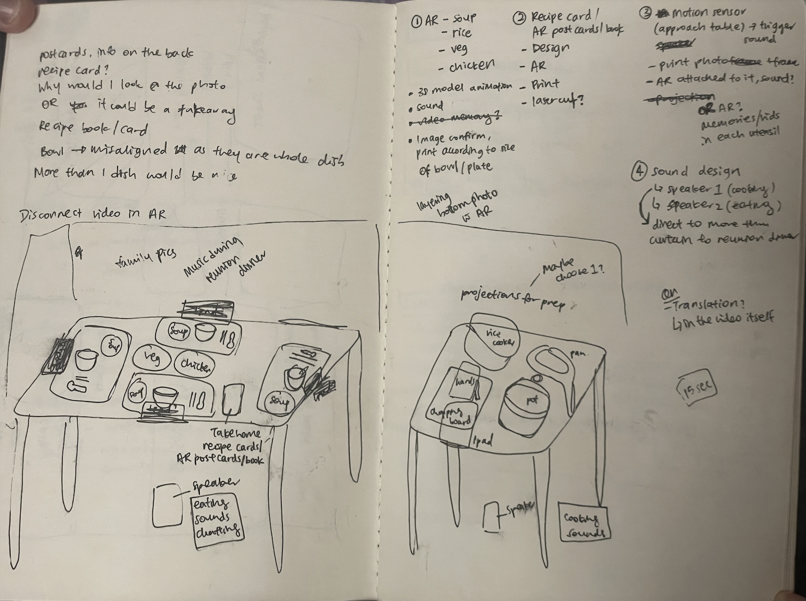
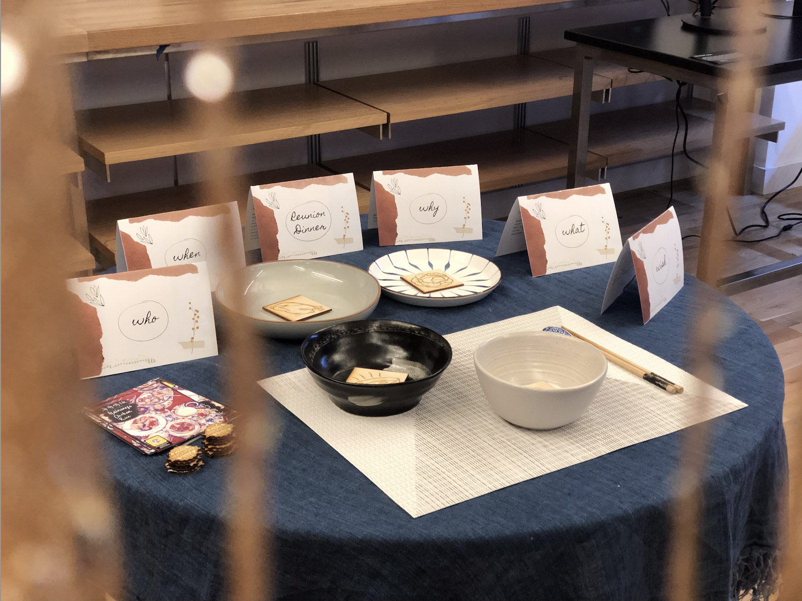
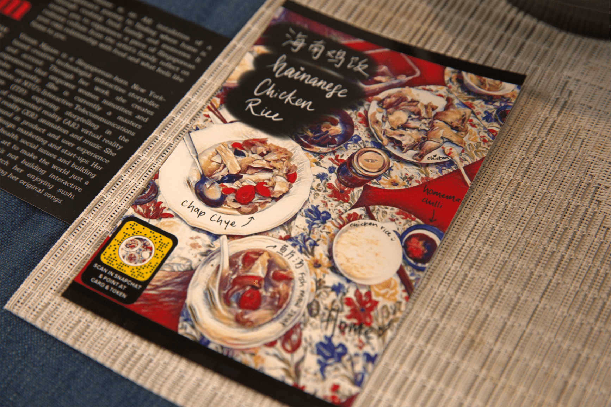
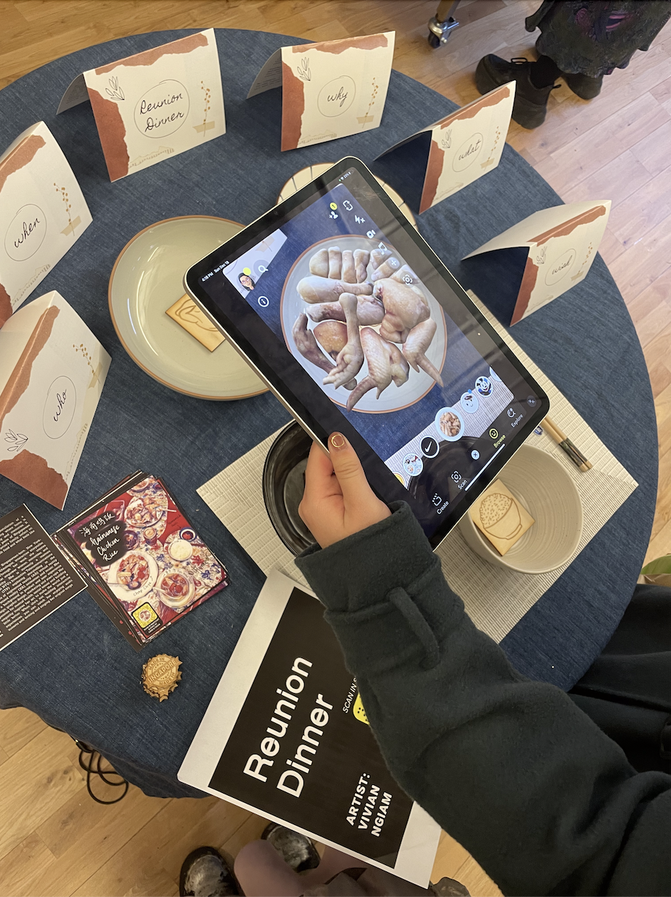

Creative Director | Lead AR Designer & Developer | ARtist
3 weeks
Reunion Dinner is an augmented reality (AR) installation that invites you to experience a piece of Singaporean culinary culture from my family. Inspired from my desire to connect to my culture and “where home is”, you will get to explore the interconnectedness of cooking, connection, memories and family through pots and pans, AR food, engaging sound and immersive storytelling.
CONTEXT
Having a strained relationship with my family, one of the rare ways I connect with my family is through cooking, food and family recipes. Moving across the world to the U.S. alone has also sparked my desire to preserve my Singaporean culture. Despite some parts of my culture I wish to leave behind, Singaporean food is something I very strongly relate to and claim as mine. Hence, the goal of this installation was to explore the nuances between an immigrant’s identity, home, sense of belonging through the power of evoking memories through food and cooking.
This installation was exhibited at a 2-day exhibition with a foot traffic of over a thousand people each day. It was created with the constraints of this exhibition in mind.

Visitors engaging with Reunion Dinner at the exhibition
I came up with the general final concept: Using “ingredient cards” to show the 3D model of the ingredient in mobile AR and a memory portal which shows Grandma teaching me how to cook that particular ingredient.
Prototype 1
Using Lens Studio, I wanted to quickly test the technical aspect of a 3D model appearing on a tracked image and a memory cube that plays the respective video segment.
Test on 3D food object on tracked image and a respective memory cube that appears and tap to play
There were some limitations of using Lens Studio, mainly the 8MB total project assets limit. Using video is very asset heavy and I would have to work around that to ensure all the videos are able to fit the size limit while still being able to tell the story. Another limitation would be that image tracking will only work for one image at a time, so interaction design would have to take this into account.
Iterations based on key feedback
A quick plate test with paper image of food and 3D food models in AR
Plate test: The interaction cards needed something else to ground them in the physical reality so I decided to test it out with a plate and tested with users. Many liked that they could see 3D food in the physical plate and that it was a good use of AR. Some did point out that the picture cutout of the food in the plate was a little distracting and or conflicting with the 3D food.
Hence, I designed a token, laser cut it and tested its image tracking capabilities since it’s technically not an image.

Laser cutting in progress
T
The token passed the technical test and was easily tracked. The feedback I received was that the 3D food could “hide” the token once it was detected, making the 3D food the focus, making the experience very seamless and easy to interact with.
Testing the laser cut token in a plate with realistic photogrammetric 3D models
Memory cube interaction considerations:
I wanted the memory cube to play when the user approaches the cube. However, it didn’t feel intuitive enough after doing some initial testing with people, especially those with little AR experience. Hence, I changed this interaction to tap to play the memory cube with instructions over the cube. However, after testing with new users, it still felt like a disconnect as now there was an added interaction on the device, conflicting with the viewing function of the device.
Initial interaction of the memory cube that needs to be improved/ more seamless
After successful testing of the laser cut tokens and 3D model food in plates, I decided to take the videos in the memory cube and put it into pots and pans. I tested this interaction with a few users and received extremely positive feedback. It was highlighted that it was almost seeing the memory in the pots and pans and that was a very strong concept. I doubled down on this idea and carved out the narrative into 2 parts:

Sketch of exhibition layout and user journey interactions
1) Cooking memories: Using the cooking utensils, memories of my Grandma teaching me how to cook will “live” in them.
I chose each physical cooking vessel to match the memory of a specific ingredient with a corresponding laser cut token: - Pan - vegetable [Spatula] - Pot - soup [Ladle] - Pot 2 - chicken [Pandan Leaf] - Chopping board - prepping [Chopper] - Rice cooker - rice [Chopsticks]
User tested this version of pots and pans being physical vessels for the memories
2) The dinner table: The placemat of a reunion dinner for one with 3D models of the food in AR is displayed here. I also added additional cards based on a long-distance conversation with my Grandma about the significance of cooking and eating our family recipes during “reunion dinner” in our culture and family.

The dinner table laid out during the ITP Winter Show 2022
sound design
After creating the assets——video clips of Grandma teaching me how to cook with translation captions, 3D models of the food, laser cut tokens——I worked on the sound design to tie the whole narrative together. I wanted the sound design to include instructions to make the experience more intuitive for visitors to move from the cooking table to the dinner table. The general speaker at each table would play the corresponding sound clip when someone approaches the table.
Taking into consideration that the exhibition might be too noisy, there were headphones connected to the iPads to allow users to hear the sound of the video memories as well.
designing the take Home object
I wanted something physical visitors could take home from the installation. After getting some feedback, I landed on: 1) A postcard of a reunion dinner table spread that was taken in Singapore during my last reunion dinner which also reveals my Grandma’s hands in AR (Snapchat)

2) “Made in Singapore” token that is laser cut and reveals a 3D model of Singaporean Hainanese Chicken Rice in AR (Snapchat and Instagram*)
Exhibition interactions during the ITP Winter Show 2022
After day 1 of the exhibition, I made the following tweaks for day 2 based on the feedback:
1) Use of headphones: people didn’t want to put on headphones, sound from iPad or Phone was loud enough so I removed the headphones from the table on the second day to streamline the interaction with the installation
2) Changed to “start facing rear camera”: Initially, because this function was not set, sometimes when people scan the Snap code, the front camera is activated and they see themselves, causing initial confusion. Now, when people scan the Snap code, the rear camera is automatically activated so it doesn’t cause confusion and they are easily able to start engaging with the installation.
3) Have both Instagram and Snapchat for the take home “Made in Singapore” token where they can interact with it using the social AR platform that they have (more users had Instagram over Snapchat)

4) Someone from the exhibition team suggested to combine the 2 tables as people came from different directions and interacted with the tables in a different order. Some visitors thought they were separate projects until I clarified that they were parts of the same project. Unfortunately, I was unable to change the layout on the second day due to exhibition constraints but if I could I would mark out the space using sheer curtains to clearly delineate the installation and have the only opening to the cooking table. This would guide users to come and interact with the cooking table first then the dinner table.
This was an extremely successful exhibit and I received amazing feedback on the project. Many immigrants related to the experience and story. I am glad I was able to showcase a little of Singapore's culture while tapping into my identity and exploring where or what home is to me.
I hope to continue working on this project and build upon the following elements: 1) Add smell
2) Include additional dialogue of the food, smells, tastes, textures of the food from family members and embed them in the respective 3D dish (e.g. when the rice appears, the accompanying conversation around the rice will be played) *Incorporate the cards on the dinner table into the experience more, possibly through this manner with translation as AR texts (I initially did not do this as I had to translate what my Grandma was saying and settled on the cards due to time constraints
One of the cards on the dinner table - includes both translation of the audio and QR code to listen
3) Polish the video and making it a full circle with captions; current workaround was to add a circular mist and crop as much of the portrait video without cutting out the translation or essential visual elements.
4) Not a lot of people have Snapchat, could include an Instagram version although the project size is 5MB instead of 8MB which makes it challenging to fit all the video files.
5) Because of multiple people interacting with the installation at the same time, some might miss the narrative soundscape. To mitigate this, leaving a card of the narrative soundscape on each table for people to pick up and read is something I would like to test.
Looking forward, I hope to show this piece in future exhibitions with an ever-improving experience. (iteration and user experience never stops!)